― 3回目の訪問（2025年5月・ぎのわんゆいマルシェ） ―
2025.5に食べました😆今回の沖縄そば巡りは、宜野湾市大山にある「ぎのわんゆいマルシェ」へ行きました。
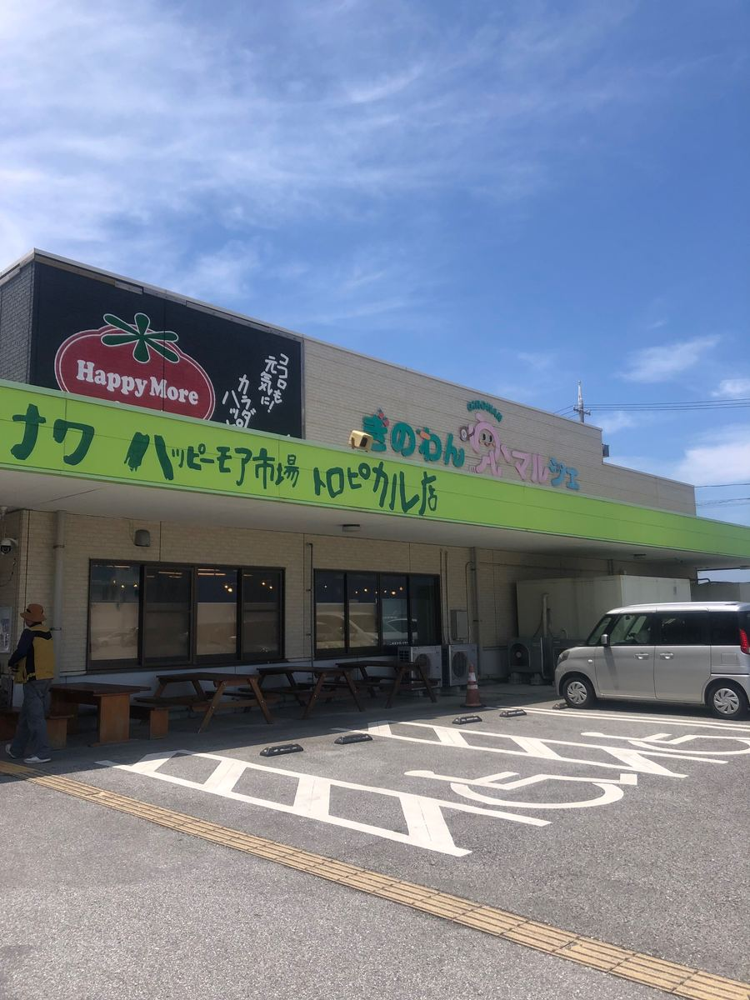
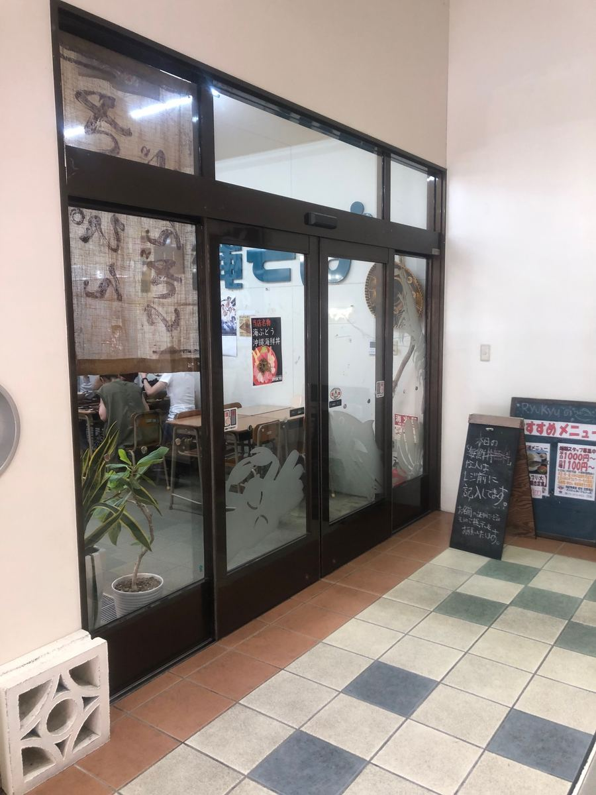
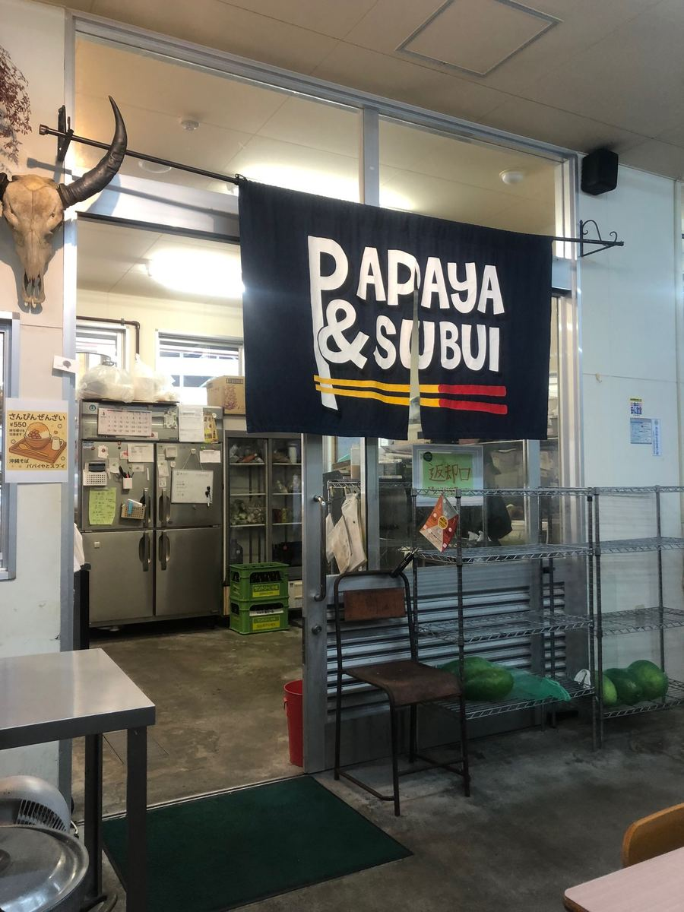
地元野菜やお土産が並ぶマルシェの中に入っているのが、「パパイヤとスブイの沖縄そば」さんです。外から見ると明るい黄緑色の看板が目に入り、マルシェの中に沖縄そば屋さんがあるとは思えないような、ちょっと個性的な雰囲気ですね。
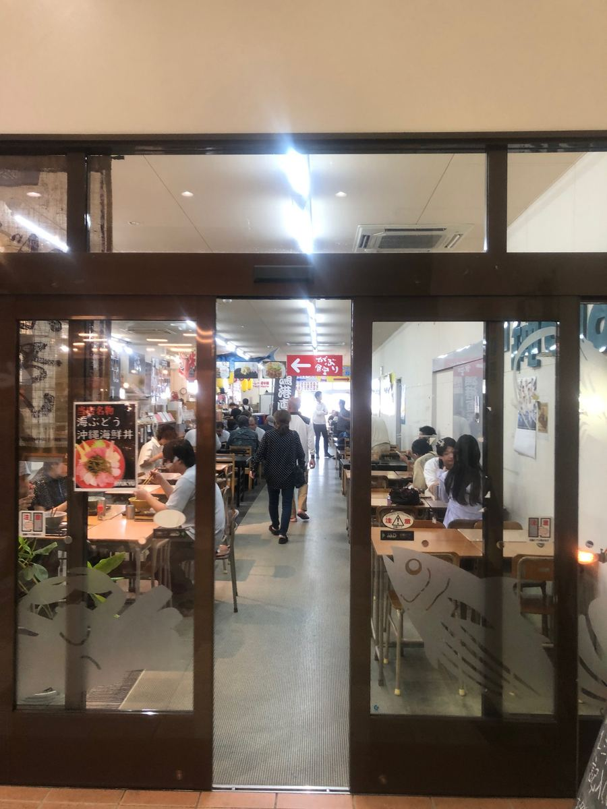
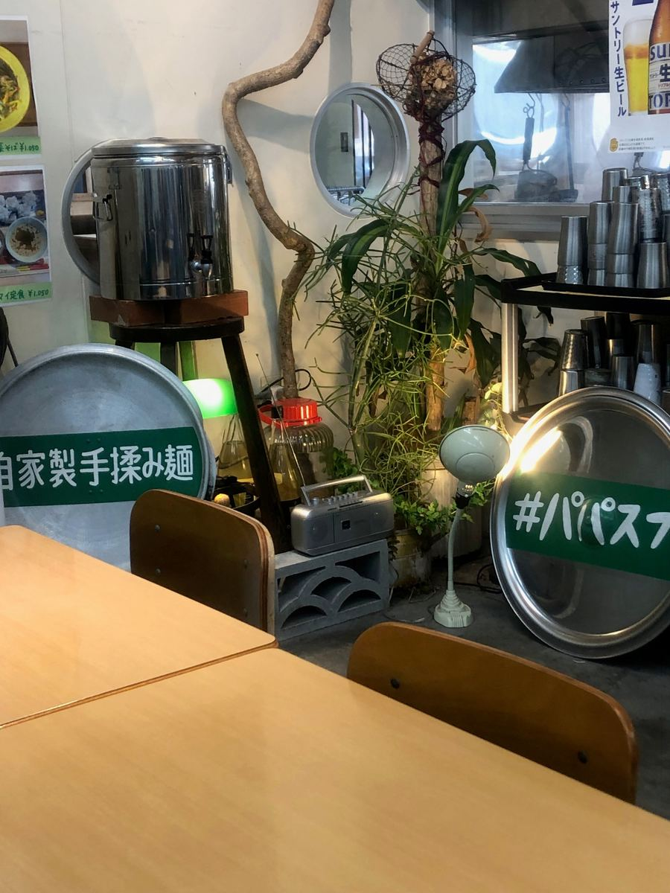
パパスブさんは、以前にうるま市の店舗や県庁前の店舗で食べたことがあるのですが、今回はかなり久しぶりの訪問になりますね。店頭には券売機があり、パパスブそばをはじめ、スヌイ椎茸そば、シークヮーサー山葵そば、梅と生姜そば、イカスミそばなど、なかなか他では見かけない沖縄そばがずらりと並んでいます。定番の三枚肉そばやソーキそばとは違う、創作沖縄そばを楽しみたい人にはワクワクするラインナップですね。
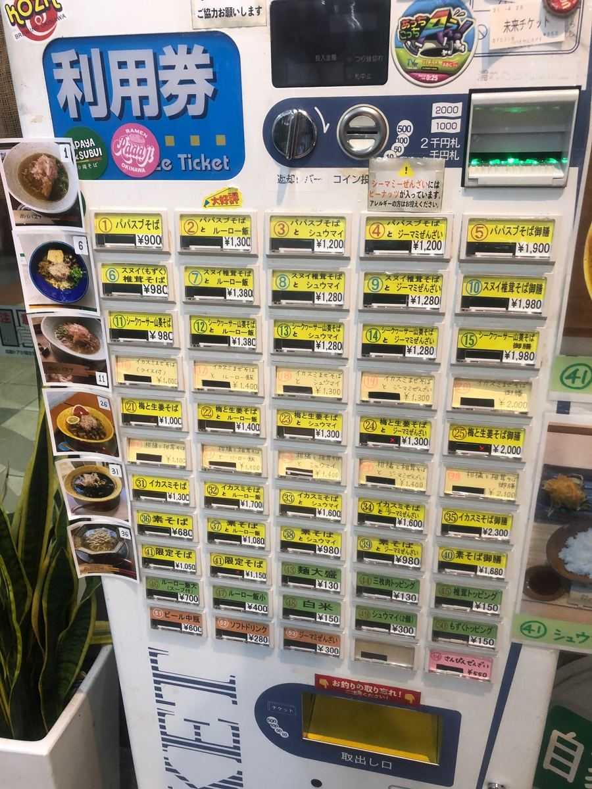
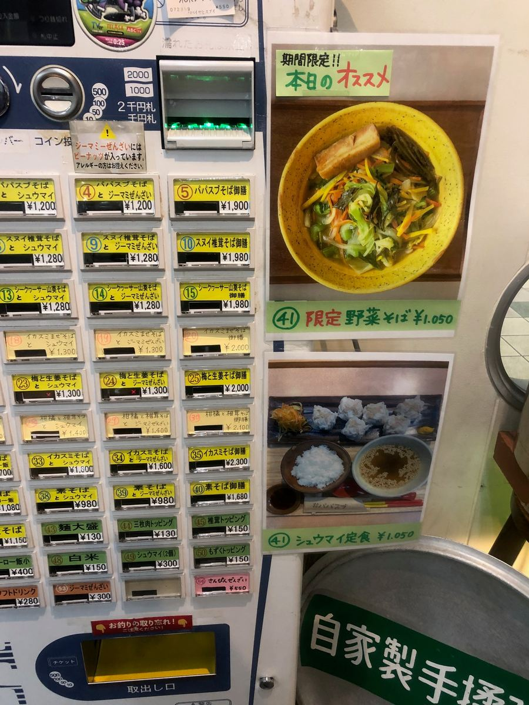
この日は店内の黒板に「野菜そばご注文のお客様 200円キャッシュバック」と書かれていたので、迷わず期間限定のオススメ「野菜そば」を注文しましたね。
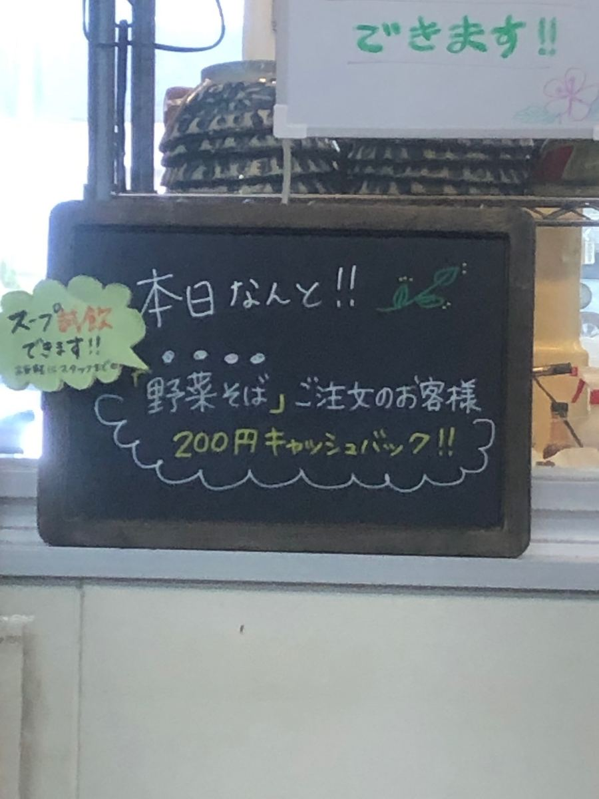
写真を見ると、青菜の茎やなす、ピーマン、パプリカ、昆布などがたっぷり盛られていて、見た目からしてかなりボリュームがあります。さらに細切れのお肉とかつお節も乗っていて、丼の中がにぎやかですね😊
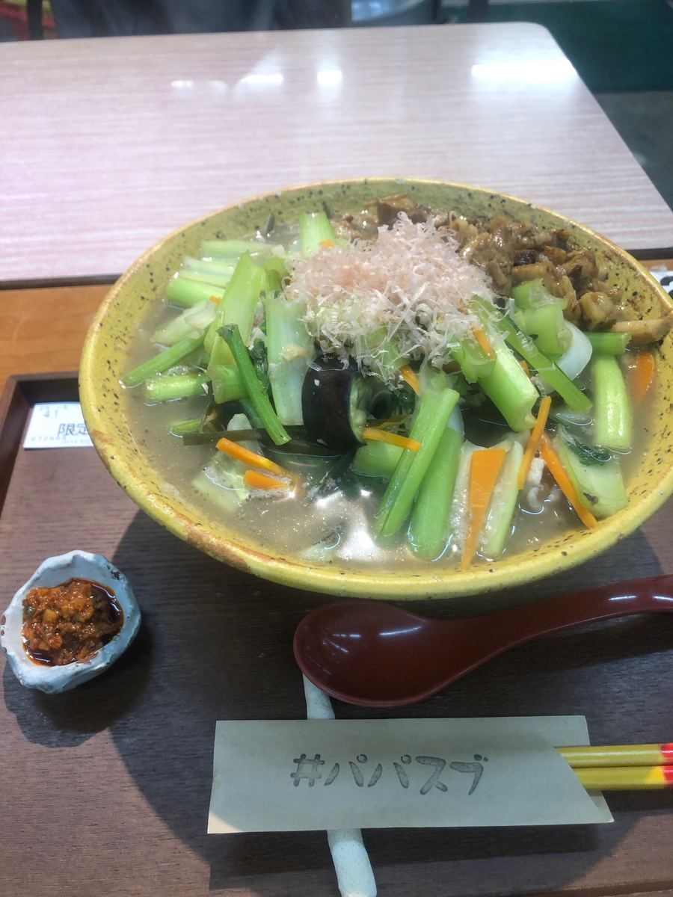
まずスープを飲んでみると、一般的な沖縄そばの豚骨や鰹出汁とはかなり違う味わいでしたね。椎茸の出汁なのか、独特の香りと旨みを感じるスープで、あっさりしているけれど個性は強めです。沖縄そばらしい鰹の香りを期待していると少し驚くかもしれませんね。野菜の水分も加わっているのか、全体的には優しい味わいで、少し物足りなさを感じました。
野菜も一般的な野菜そばとはだいぶ違いますね。青菜の茎部分、なす、ピーマン、パプリカといった夏野菜がメインで入っていました。味付けはかなり控えめで、野菜本来の香りや食感を味わうタイプですね。野菜好きには楽しめる一杯だと思います。
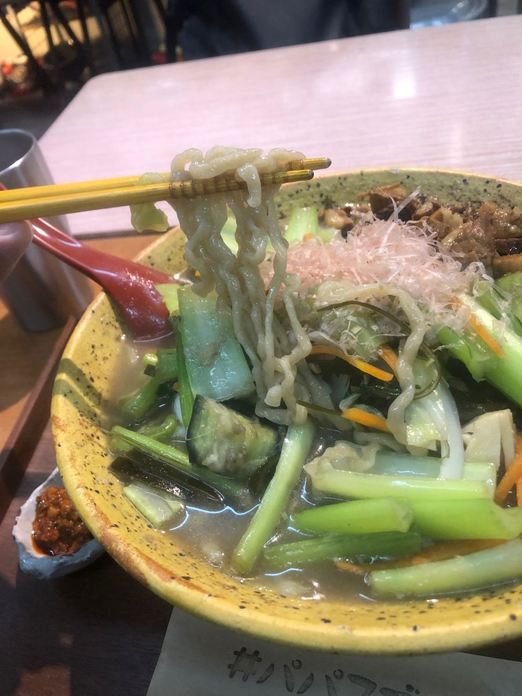
麺は自家製手揉み麺とのことで、中細の縮れ麺です。沖縄そばの麺としては少し細めです。
上に乗っていた細切れ肉も、いわゆる沖縄そばの三枚肉やソーキとは別物でした。五香粉のような香りなのか、少しハーブ系にも感じる個性的な味付けで、これまた他店ではあまり出会わない味ですね。スープも具材も、沖縄そばの定番に寄せるというより、南国系の創作料理として仕上げている印象です。途中からハリッサのような調味料を加えてみると、カレーっぽいスパイス感が出て、さらにエスニック寄りの一杯に変化しました🌶️
正直なところ、好みで言えば味はあまりハマらなかったですね。全体的に薄味で、沖縄そばに求める豚骨や鰹の力強さとはかなり方向が違いました。ただし、野菜の量は本当に多くて、食べ終わるころにはかなりお腹いっぱいになりますね。野菜をしっかり食べたい人、いつもの沖縄そばとは違う変わり種を探している人、スパイス系や創作系の味が好きな人には面白いお店だと思います。
評価（9.5点/15点）：ぎのわんゆいマルシェの中という立地なので、買い物ついでに寄りやすいのもいいですね。沖縄そばの幅広さを感じたい人は、ぜひ一度パパスブさんの個性派沖縄そばを試してみてほしいですね✨
麺 ：★★★✬☆（3.5）
スープ：★★★☆☆（3）
具 ：★★★☆☆（3）
― 2回目の訪問（2024年10月・那覇市松尾） ―
2024.10に食べました😆今回は那覇市松尾にある「沖縄そばパパイヤとスブイ」さんを訪問してきました。以前うるま市石川にあった頃に一度訪れていますが、那覇市への移転後は初めての訪問になります。
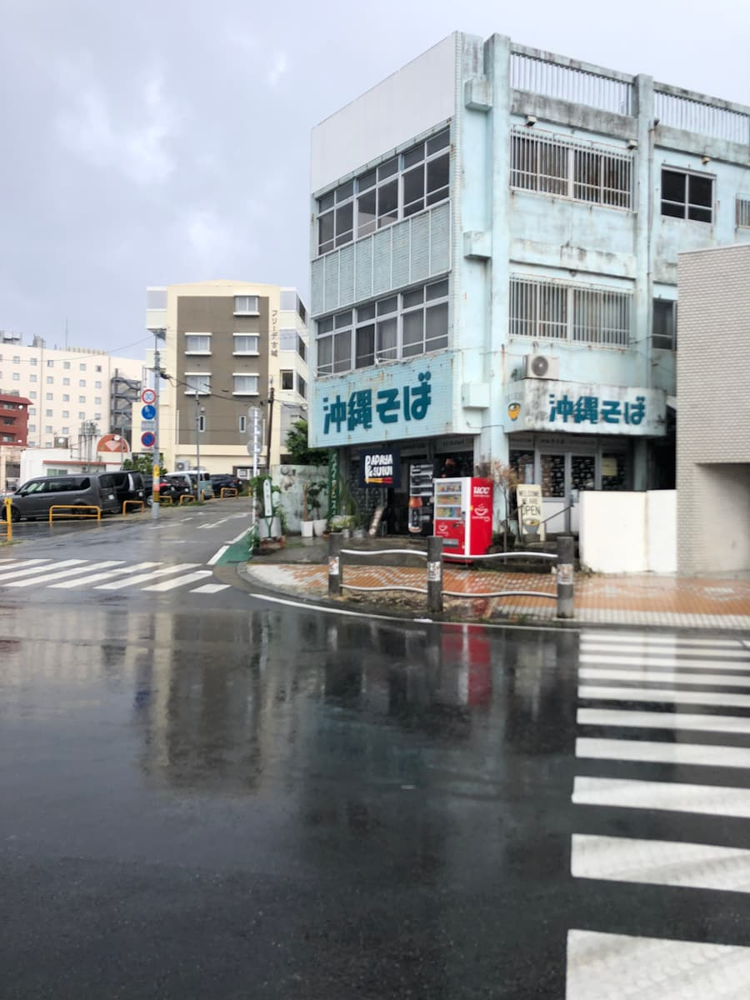
店舗は古いビルの1階にあり、店内に入ると、観葉植物がいくつも置かれた落ち着いた空間が広がっていて、まるでカフェのような雰囲気😊 小学校のテーブルや椅子が利用されて居心地の良さを演出しているように感じました。
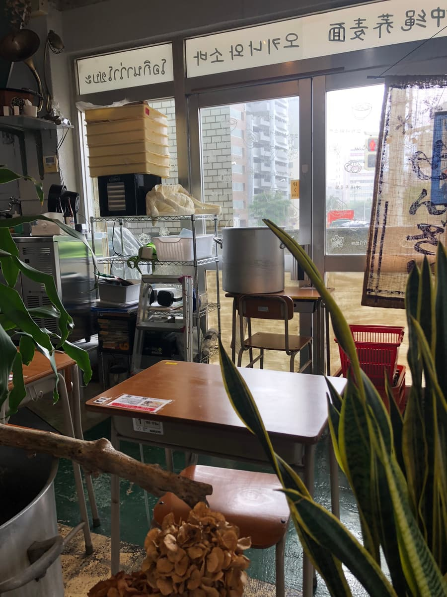
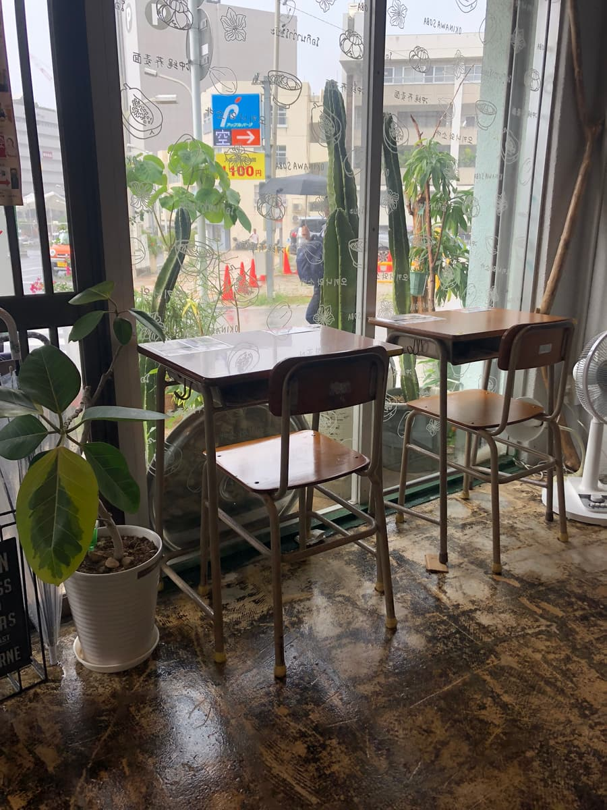
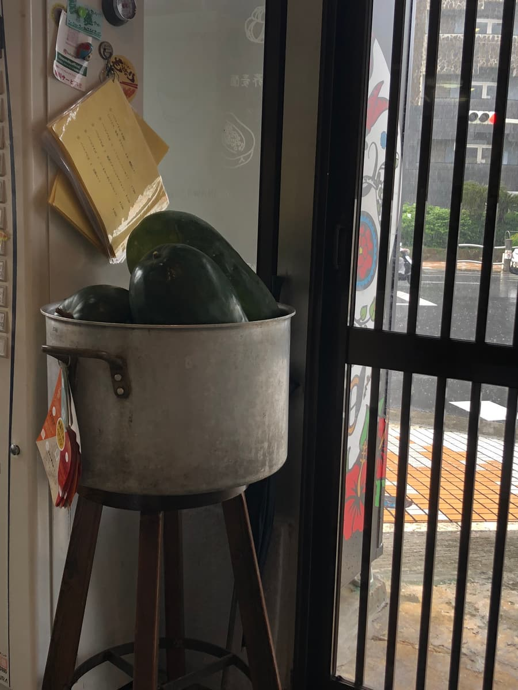
入口近くに設置された食券機でメニューを確認すると、様々な創作系の沖縄そばが並んでいます。その中でも看板メニューである「パパスブそば」が気になりました。食券を購入し、植物に囲まれたテーブル席で待つことに。店内には私の他にも数名のお客さんがいましたが、皆さんゆっくりとした時間を過ごしているような印象でしたね。
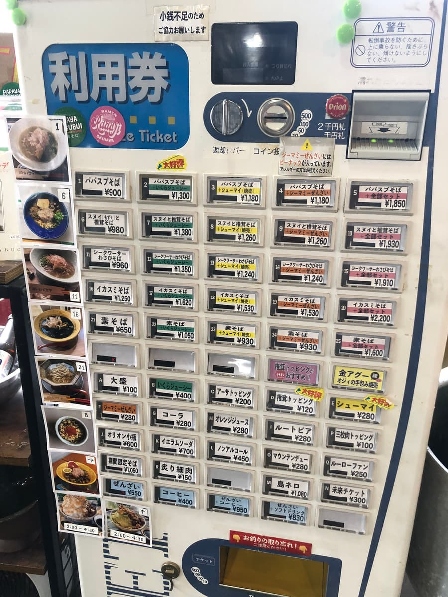
店内で待っている間、窓の外を眺めると雨が降っていました。しかし、この雨の日の雰囲気が不思議と心地よく感じられます。観葉植物の緑と古めかしい家具、そして窓から差し込む自然光が絶妙なバランスで溶け合っているんです😌
しばらくして、黄色い器に盛られた「パパスブそば」が運ばれてきました。
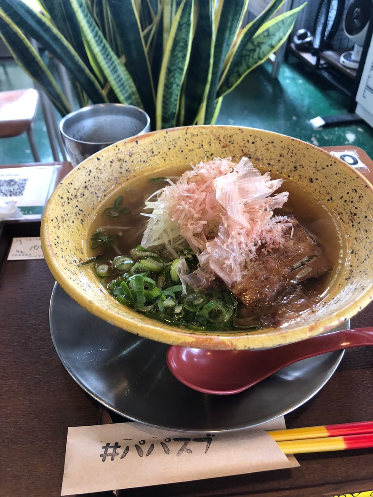
まずは恒例のスープから頂きます。一口すすると、これまでの沖縄そば店とは異なる深みのある味わいが広がります。豚、鶏、鰹に加えて、たっぷりの椎茸から取った出汁が特徴的です。
実は、このスープは沖縄そばというよりも、ラーメンのスープとしても十分通用する美味しさだと感じました。特に椎茸の風味が効いているのが印象的で、和風だしの要素も感じられる奥深い味わいです。これは他店ではなかなか味わえない独自の世界観ですね😋
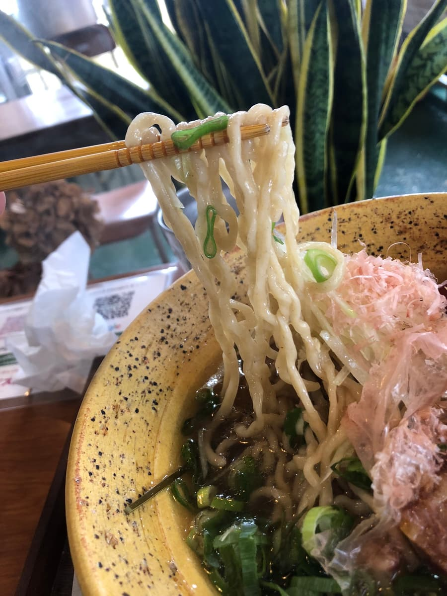
麺は緩やかな縮れのある自家製手揉み麺を使用していて、適度なもちもち感があります。スープとの絡みも良く、一緒に食べるとスープの旨味がより引き立つような気がします。太さは中細といったところでしょうか。腰の強さも程よく、食べ進めても最後まで良い食感を保っていました。
具材のシブイと三枚肉は、じっくりトロトロに煮込まれています。ただ、三枚肉は若干筋っぽさが残っているのが少し気になりました。ネギはたっぷりと載せられていて、スープと絡めて食べると良いアクセントになっています。
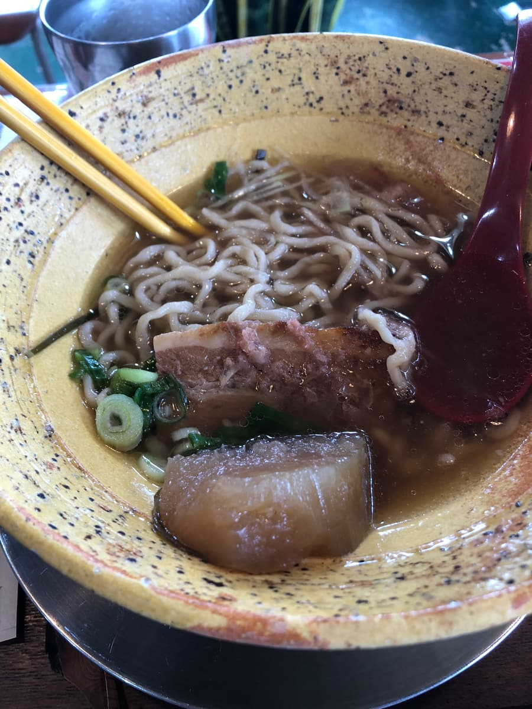
面白かったのは、テーブルに置かれた調味料です。一般的な沖縄そばの調味料であるコーレーグースの代わりに「レモスコ」が置かれていたんです。これは瀬戸内レモンを使用した辛味調味料で、試しにスープに入れてみると、程よい酸味と辛味が加わって全く新しい味わいに変化！これは斬新な発想だと感心しました😆
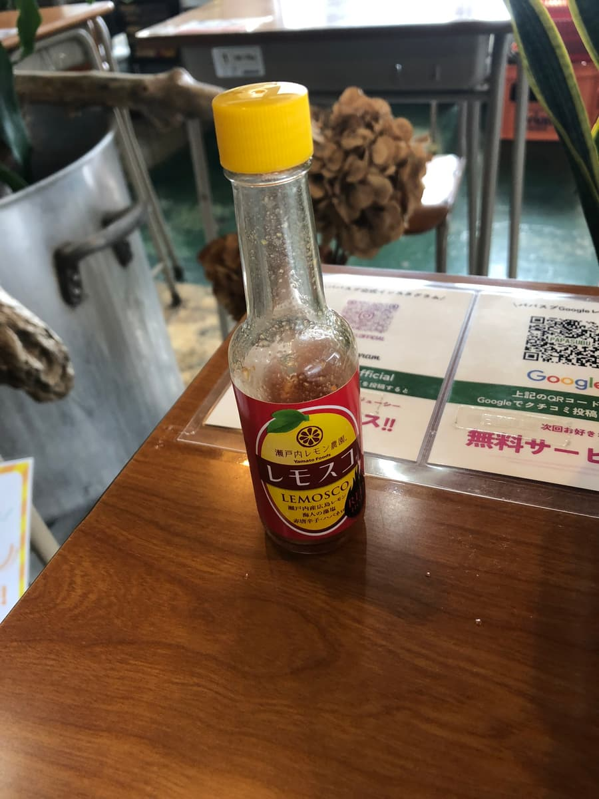
店内の雰囲気作りも特徴的で、古い学校の机のような木製のテーブルや、観葉植物の配置など、意図的にノスタルジックな空間を演出しているように感じられます。窓際には大きな観葉植物が置かれ、その奥には調理場が見えます。厨房からは時折、出汁を取る良い香りが漂ってきて、食欲をそそられましたね。
評価（10.5点/15点）：創作系の沖縄そばとして、独自の世界観を持った一杯だと感じました。特に椎茸の風味が効いた個性的なスープは、他店にはない魅力です。那覇市に移転してからも変わらぬ味を守っているのは素晴らしいですね。店内の雰囲気作りも含めて、ゆっくりと沖縄そばを楽しめる貴重なお店だと思います。
麺 ：★★★✬☆（3.5）
スープ：★★★✬☆（3.5）
具 ：★★★✬☆（3.5）
― 1回目の訪問（2023年3月・うるま市石川） ―
※以下はうるま市石川で営業していた時の記事です。現在は宜野湾市に移転しています。
2023.3にほぼ国道329号沿いのにある「パパイヤとスブイ」さんに行きました。
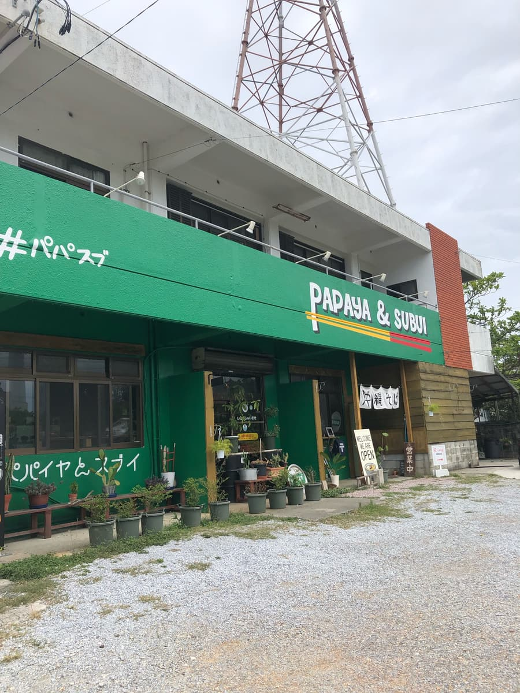
元ラーメン屋さんを改装して、2022年の4月11日にオープンしたこちらのお店、TVか何かでパパイヤとかスブイ、スープの出汁にシイタケを使っていると知って、気になっていました。
「パパイヤ」とは熱帯アメリカが原産の南国フルーツみたいですが、沖縄では緑色の未熟な果実（青パパイヤ）を野菜として食べます。沖縄料理ではパパヤーチャンプーにしてよく食べますね☺美味しいです。
「スブイ」とは、とうがん（冬瓜）のことで、熱帯アジア原産の野菜で、沖縄料理の定番です。こちらも美味しいですね。
食券機からこれらが具に使われていると思われる名前の「パパスブそば」を注文。
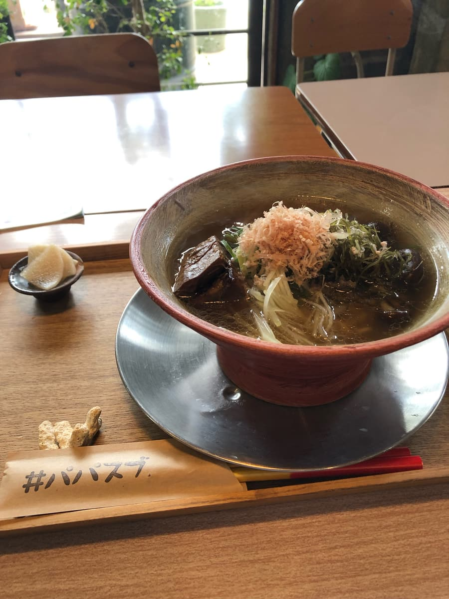
店内もとてもおしゃれな雰囲気な中、先ずはスープを一飲み😀 ん～やっぱ今までの他店のスープとは違う感じで新鮮。カツオ，昆布、豚，鳥出汁に加え、大量の椎茸からスープを作って，県産塩とスクガラスで味を整えているとのこと。自家製手揉み麺もスープと絡んで美味い😋
具は柔らかい豚肉に、写真は隠れてしまってますが、トロトロの味が染み込んだスブイ（冬瓜）。さらに鰹節、パパイヤ、昆布の千切り、シイタケも入っていて、こちらも他店では味わえない独特な具材で新鮮です。ヘルシーですね。
評価（10.5点/15点）：外観、店内はとてもおしゃれで、私の隣のテーブルにいた観光客若者カップルの女性はとても喜んでました😀 ここ来て正解的な笑 手揉み縮れ麺も美味しいですし、具も本当に他店とは違うので新鮮です。普通の沖縄そば飽きた方は如何でしょうか。
PS：ただし、申し訳ないですが、せっかく、建物、店内はおしゃれに改装しているのですが、離れにあるトイレは中が古く、きれいな感じでなく、もったいないなーと思いました。
麺 ：★★★✬☆（3.5）
スープ：★★★✬☆（3.5）
具 ：★★★✬☆（3.5）